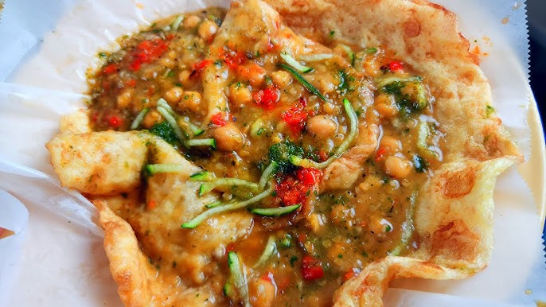

Doubles

Description
Doubles is a popular street food originating from Trinidad and Tobago. It consists of two pieces of fried flatbread called bara, filled with curried chickpeas known as channa. Often topped with various chutneys, pepper sauce, and sometimes cucumber or tamarind sauce, Doubles is known for its spicy, savory flavor and soft, satisfying texture. It's typically eaten for breakfast or as a quick snack and has become a beloved staple in Trinidadian cuisine.
Ingredients
For the Bara
- 2 cups all-purpose flour
- 3/4 warm water (more if needed)
- 1 tsp turmeric
- 1/2 tsp salt
- 1 tsp sugar
- 1 tsp yeast
- Oil (for frying)
Instructions
- In a large bowl, mix the flour, turmeric, sugar, salt and yeast.
- Slowly add warm water and mix until a soft, sticky dough forms.
- Knead for about 5-7 minutes until smooth.
- Cover the bowl with a damp cloth or plastic wrap and let it rise for 1 hour (until doubled in size).
- Once risen, grease your hands and pinch off golf-ball-sized pieces.
- Flatten each piece into a thin circle (about 4 inches wide).
- Heat oil in frying pan over medium-high heat.
- Fry each bara for about 20-30 seconds on each side, until puffed and lightly golden.
- Drain on paper towels and keep warm.
For the Channa
- 1 can chickpeas
- 2 cloves garlic, minced
- 1/2 chopped onion
- 1 tbsp curry
- 1/2 tsp cumin
- 1/2 tsp turmeric
- Salt to taste
- Pepper or hot sauce (to your spice level)
- 1/2 cup water or more (for sauce)
Instruction
- Heat a little oil in a pot over medium heat.
- Add onions and garlic, saute until soft.
- Stir in curry powder, turmeric, and cumin. Cook for 1 minute.
- Add chickpeas and mash a few to thicken the sauce.
- Add water and let it simmer for about 10-15 minutes until the sauce thickens.
- Add salt and pepper to taste.
Assemble the Doubles
- Place one bara on a plate.
- Spoon a generous amount of channa on top.
- Add optional toppings: tamarind sauce, cucumber chutney, pepper sauce, etc.
- Place a second bara on top (like a sandwich).
Enjoy!
Eat immediately while warm! Traditionally, Doubles are eaten with your hands and a little messiness is part of the fun.
Home